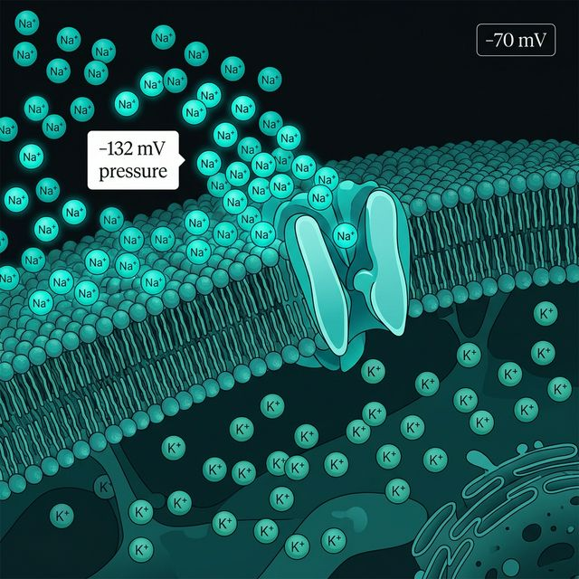
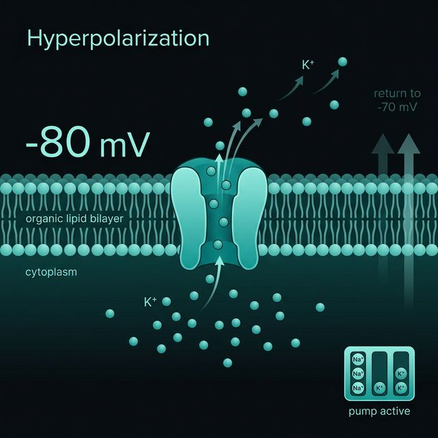

Aksiyon Potansiyelinin Aşamaları
Nöronal uyarılabilirliğin temel elektrofizyolojik döngüsü

Aşama 1: Dinlenme
\(-70 \text{ mV}\)Voltaj kapılı \(\text{Na}^+\) kanalları kapalı durumdadır. Elektromotor kuvvet, sodyum iyonlarını \(-132 \text{ mV}\)'luk bir baskıyla içeri çekmeye çalışır ama kapılar kapalıdır.

Aşama 2: Depolarizasyon
\(-70 \rightarrow +40 \text{ mV}\)\(-55 \text{ mV}\) eşiği aşılınca \(\text{Na}^+\) kanalları anında açılır. Devasa baskı serbest kalarak hücre içine hücum eder. Membran potansiyeli hızla pozitife fırlar.

Aşama 3: Repolarizasyon
\(+40 \rightarrow -70 \text{ mV}\)\(\text{Na}^+\) kanalları inaktive olurken, yavaş açılan \(\text{K}^+\) kanalları tam kapasiteye ulaşır. Dışarı \(\text{K}^+\) çıkışıyla hücre içi yeniden negatifleşmeye başlar.

Aşama 4: Hiperpolarizasyon
\(-90 \text{ mV}\)\(\text{K}^+\) kanalları yavaş kapandığı için potansiyel \(-70 \text{ mV}\)'un altına düşer. Bu kısa evrenin sonunda iyonik denge yeniden kurulur ve sistem dinlenmeye döner.